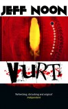
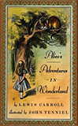

Loading...
About
You can read more about the project here: Notes on remixing Noon, generative text and Markov chains.
The text above is generated using the online fictional remixing engine v.0.1. using random extracts from one (or sometimes more) of the following novels by Jeff Noon. There will be bugs and encoding issues.
-
 Automated Alice
Automated Alice
-
 Pixel Juice
Pixel Juice
-
 Pollen
Pollen
- Channel Skin
-  Vurt
-  + Alice's Adventures in Wonderland by Lewis Carroll
You can also find a remix of Warren Ellis: Gun Machine here.
All book extracts © Jeff Noon, except Alice's Adventures in Wonderland. All Rights Reserved
Remixing code by Rev Dan Catt